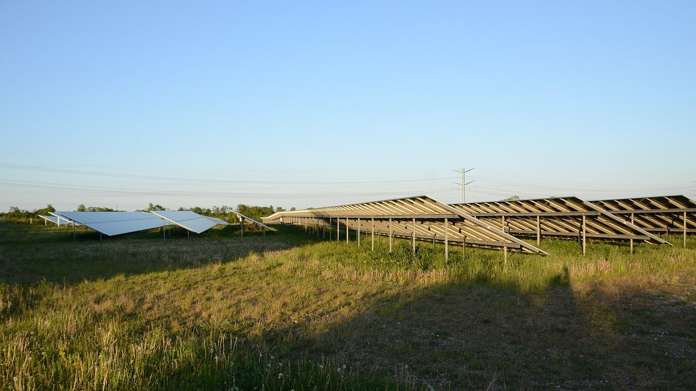

덴마크 오벤로시, 카쇠 일대 6,000ha 에너지·산업단지 종합계획 의결…풍력·태양광 4,500ha, 일자리 최대 3,000개 기대

발전사업자가 내는 녹색 기금은 지역 단체·사업에…공사 중 하루 승용차 최대 8,000대·트럭 1,000대, 단지 안 일부 주택 매입 가능성에 주민은 집값 걱정 — 개별 사업마다 허가·환경평가 따로
덴마크 남유틀란트의 오벤로(Aabenraa)시 의회가 지난 10월 카쇠(Kassø) 일대 약 6,000ha를 재생에너지·산업·농업이 어우러진 단지로 만드는 장기 종합계획을 모든 정당의 찬성으로 의결했다. 오벤로 시가지만 한 계획 면적 가운데 약 1,500ha는 녹색에너지·식품·바이오소재 기업과 데이터센터가 들어설 산업단지에, 나머지 4,500ha는 농업·자연과 함께 풍력·태양광에 배정됐으며, 시는 장기적으로 일자리가 최대 3,000개 생길 것으로 본다. 단지 안에서는 데이터센터와 에너지 설비의 남는 열을 온실·건자재 업체와 지역난방에 돌리고, 오벤로의 정화 하수를 관으로 보내 냉각과 수소·e-메탄올 생산에 쓰며, 전기는 되도록 현지 풍력·태양광에서 바로 받는 섹터 결합 방식을 내세웠다. 지역에는 풍력·태양광 사업자가 내는 녹색 기금으로 단체·기관·지역 사업을 돕고, 새 자연·휴양지와 자전거·산책로를 만들며, 교육기관과 손잡고 주민 기술 교육을 하겠다는 계획이다. 그러나 빠르면 2030년 시작될 공사 기간에는 하루 승용차 최대 8,000대와 트럭 1,000대가 오가고 공사 뒤에도 시내 일부 구간 교통이 40~90% 늘 것으로 추정되며, 단지 안 일부 주택은 개발사가 사들여 철거하거나 다른 용도로 쓸 수 있어 주민들은 나중에 집을 팔 수 있을지 몰라 집에 돈을 들이기를 망설이고 있다. 시는 주민과 투자자의 대화를 일찍 중재하겠다고 했으며, 이번 의결은 앞으로 20~30년의 방향을 정한 것일 뿐 어떤 기업과 설비가 들어설지는 정해지지 않았고 개별 사업마다 계획·허가·환경평가를 따로 거쳐야 한다.
시민에너지 관점
카쇠 계획은 오벤로 시가지만 한 6,000ha에 일자리 최대 3,000개를 내걸었지만, 정작 4,500ha에 들어설 풍력·태양광에서 주민에게 돌아갈 몫은 액수가 정해지지 않은 녹색 기금과 산책로 수준에 머물러 있다. 대규모 단지가 일자리와 산업을 가져온다는 기대는 크지만, 집값과 교통을 걱정하는 주민에게 액수도 모르는 기금만으로는 동의를 얻기 어렵고 반발은 개별 사업마다 되풀이될 수 있다. 발전 설비의 일부를 주민과 지역이 직접 소유해야 단지에서 나오는 수익이 해마다 마을에 남고, 주민도 개발의 피해자가 아니라 당사자가 된다. 국내 재생에너지 집적화단지와 산업단지 계획도 처음부터 주민 공동소유 지분을 설계에 넣어야 한다.
출처: Der Nordschleswiger 2026-11-05 Jan Peters 원문 보기
デンマーク・オーベンロー市、カッソー周辺6,000haのエネルギー・産業団地総合計画を議決…風力・太陽光に4,500ha、雇用は最大3,000人を期待
発電事業者が拠出する「グリーン基金」は地域の団体・事業へ…工事中は1日最大で乗用車8,000台・トラック1,000台、団地内の一部住宅は買収の可能性があり住民は住宅価値を懸念 — 個別事業ごとに許可・環境評価が別途必要
デンマーク南ユトランドのオーベンロー（Aabenraa）市議会は10月、カッソー（Kassø）周辺の約6,000haを再生可能エネルギー・産業・農業が共存する団地にする長期総合計画を、全政党の賛成で議決した。オーベンロー市街地ほどの計画面積のうち約1,500haはグリーンエネルギー・食品・バイオ素材の企業やデータセンターが入る産業団地に、残る4,500haは農業・自然と並んで風力・太陽光に割り当てられ、市は長期的に最大3,000人の雇用が生まれると見込む。団地内ではデータセンターやエネルギー設備の余剰熱を温室や建材メーカー、地域熱供給に回し、オーベンローの浄化下水をパイプで送って冷却や水素・e-メタノールの製造に使い、電力はできる限り地元の風力・太陽光から直接受けるセクターカップリングを打ち出した。地域には、風力・太陽光の事業者が拠出する「グリーン基金」で団体・機関・地域事業を支援し、新たな自然・保養地や自転車道・遊歩道を整備し、教育機関と連携して住民の技能教育を行う計画だ。しかし早ければ2030年に始まる工事期間中は1日最大で乗用車8,000台とトラック1,000台が行き交い、工事後も市内の一部区間で交通量が40～90%増えると推計されるうえ、団地内の一部住宅は開発事業者に買い取られ取り壊しや用途変更となる可能性があり、住民は将来家を売れるか分からないため住宅への投資をためらっている。市は住民と投資家の対話を早めに仲介するとしており、今回の議決は今後20～30年の方向性を定めたもので、どの企業や設備が来るかは決まっておらず、個別事業ごとに計画・許可・環境評価が別途必要となる。
市民エネルギーの視点
カッソー計画はオーベンロー市街地ほどの6,000haに最大3,000人の雇用を掲げたが、肝心の4,500haに建つ風力・太陽光から住民に戻る取り分は、金額の決まっていないグリーン基金と遊歩道の水準にとどまっている。大規模団地が雇用と産業をもたらすとの期待は大きいが、住宅価値や交通を心配する住民にとって、金額も分からない基金だけでは同意を得にくく、反発は個別事業のたびに繰り返されかねない。発電設備の一部を住民と地域が直接所有してこそ、団地から生まれる収益が毎年地域に残り、住民も開発の被害者ではなく当事者になる。韓国の再エネ集積化団地や産業団地の計画も、最初から住民の共同所有持ち分を設計に組み込むべきだ。
出典: Der Nordschleswiger 2026-11-05 Jan Peters 原文を読む
丹麦奥本罗市通过卡瑟一带6,000公顷能源与产业园区总体规划…4,500公顷用于风电和光伏，预计最多创造3,000个就业岗位
发电企业缴纳的“绿色基金”用于地方团体和项目…施工期间每天最多8,000辆轿车和1,000辆卡车，园区内部分住宅可能被收购，居民担心房产价值 — 每个项目须另行审批和环评
丹麦南日德兰的奥本罗（Aabenraa）市议会于10月以所有政党一致赞成，通过了把卡瑟（Kassø）一带约6,000公顷土地建成可再生能源、产业与农业共存园区的长期总体规划。规划面积相当于奥本罗市区大小，其中约1,500公顷用于吸引绿色能源、食品、生物材料企业和数据中心入驻的产业园区，其余4,500公顷在保留农业和自然的同时用于风电和光伏；市政府预计长期可创造最多3,000个就业岗位。园区内将把数据中心和能源设施的余热供给温室、建材企业和区域供热，把奥本罗处理后的污水用管道输送过来用于冷却以及氢气和电制甲醇生产，电力尽量直接取自当地风电和光伏，即所谓的部门耦合。对地方而言，计划以风电和光伏企业缴纳的“绿色基金”资助团体、机构和地方项目，建设新的自然休闲区以及自行车道和步道，并与教育机构合作为居民提供技能培训。然而，最早可能于2030年开始的施工期间，每天最多将有8,000辆轿车和1,000辆卡车通行，施工结束后市内部分路段交通量预计仍将增加40%至90%；园区内部分住宅可能被开发商收购后拆除或改作他用，居民因不知道将来房子能否卖出而不敢投资修缮。市政府表示将尽早居中协调居民与投资者的对话；此次决议只是确定了未来20至30年的方向，哪些企业和设施会进驻尚未确定，每个具体项目都须另行完成规划、审批和环境评估。
市民能源视角
卡瑟规划在相当于奥本罗市区大小的6,000公顷土地上许诺最多3,000个就业岗位，但4,500公顷风电和光伏真正回馈居民的份额，却只停留在金额未定的绿色基金和步道层面。人们对大型园区带来就业和产业寄予厚望，但对担心房价和交通的居民来说，仅凭金额不明的基金难以换来同意，反对声浪可能在每个项目中反复出现。只有让居民和地方直接拥有部分发电设施，园区产生的收益才会年年留在当地，居民也才会成为开发的当事人而不是受害者。韩国的可再生能源集聚园区和产业园区规划也应从一开始就把居民共同持股纳入设计。
来源: Der Nordschleswiger 2026-11-05 Jan Peters 查看原文
Denmark's Aabenraa approves master plan for 6,000-hectare energy and industrial zone around Kassø, with 4,500 hectares for wind and solar and up to 3,000 jobs expected
Green funds paid by wind and solar operators to go to local groups and projects; construction could bring up to 8,000 cars and 1,000 lorries a day, and some homes in the zone may be bought up, leaving residents worried about property values — each project still needs its own permits and environmental assessment
The city council of Aabenraa in southern Jutland, Denmark, voted in October, with the support of every party, for a long-term master plan to turn about 6,000 hectares around Kassø into a zone combining renewable energy, industry and farming. Of an area roughly the size of the town of Aabenraa, about 1,500 hectares are set aside for an industrial park for green energy, food and bio-materials companies and data centres, and the remaining 4,500 hectares for wind turbines and solar alongside farming and nature, with the municipality expecting up to 3,000 jobs in the long run. The plan relies on sector coupling: surplus heat from data centres and energy plants would go to greenhouses, building-materials makers and district heating, treated wastewater from Aabenraa would be piped in for cooling and for producing hydrogen and e-methanol, and electricity would come as directly as possible from local wind and solar. For the local area, green funds paid into by wind and solar operators would support associations, institutions and local projects, alongside new nature and recreation areas, cycle and walking paths, and skills training with educational institutions. But construction, which could begin around 2030, is expected to bring up to 8,000 cars and 1,000 lorries a day, traffic on some routes through town is projected to rise 40 to 90% even afterwards, and some homes inside the zone could be bought by developers and demolished or put to other uses, so residents are hesitant to invest in houses they are not sure they can sell later. The municipality says it will broker early talks between residents and investors, and stresses that the decision only sets a direction for the next 20 to 30 years, with no decision yet on which companies or plants will come and each project still needing its own plans, permits and environmental assessment.
Citizen Energy View
The Kassø plan promises up to 3,000 jobs on 6,000 hectares, an area the size of Aabenraa itself, yet what residents stand to get from the wind and solar on 4,500 hectares is limited to green funds of unspecified size and new walking paths. Hopes are high that a large zone will bring jobs and industry, but for residents worried about house prices and traffic, a fund of unknown size is unlikely to win consent, and opposition may resurface with every individual project. Only if residents and the locality directly own part of the generating capacity will the zone's income stay in the area year after year, making residents stakeholders in development rather than its casualties. Korea's renewable energy clusters and industrial-zone plans should likewise build resident co-ownership stakes into their design from the start.
Source: Der Nordschleswiger 2026-11-05 Jan Peters Read the original